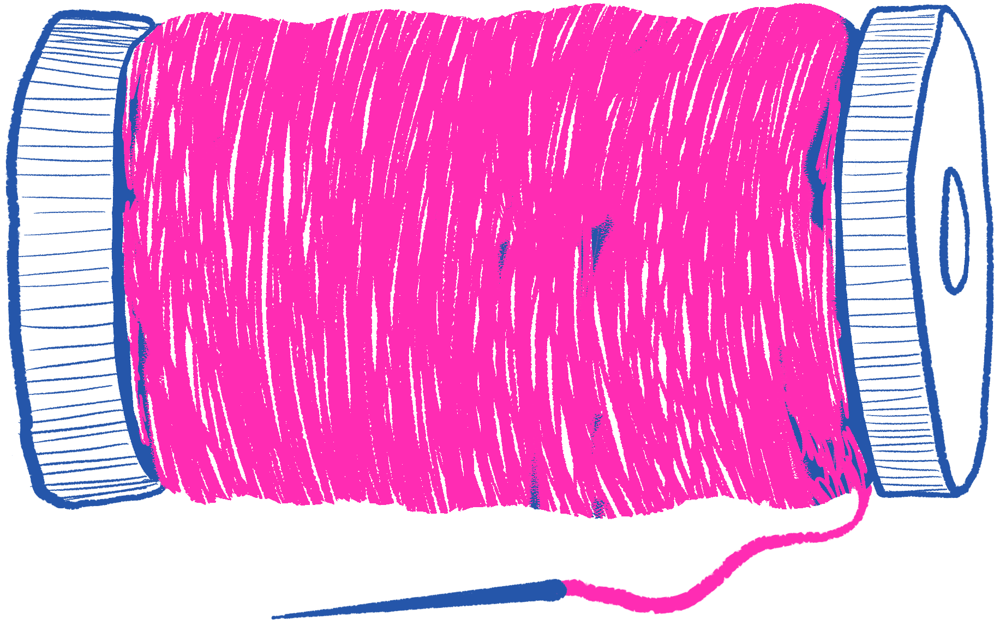
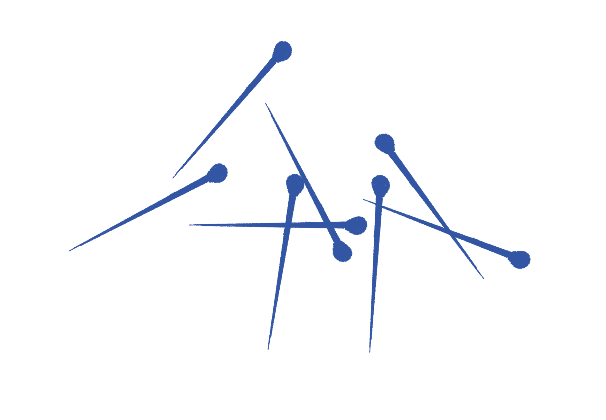

BASIC MATERIALS
You can practically do all the repairs on this page with only these materials! Some repairs include extra materials that are optional or common items found around the home.
Chalk
Needle

Embroidery Thread / 2-3 Pieces of Thread
Scissors

TIME NEEDED
20 - 60 mins.
DIFFICULTY
MATERIALS
Ruler / Measuring Tape

TIME NEEDED
15 - 30 mins.
DIFFICULTY

MATERIALS
Button
TIME NEEDED
15 - 30 mins. Depends on size of hole
DIFFICULTY

MATERIALS
Tennis Ball / Anything to stretch out fabric (I have used a box of staples to stretch a sock)
Optional: Yarn

TIME NEEDED
1 hour
DIFFICULTY
MATERIALS
Iron

Straight pins
REPAIR GUIDE
This website contains stitches and mends I know and often use on my clothing. Using a needle and thread is deeply human and all of the fabrics we wear have been put together by a person. Repairing clothes brings a sense of connection to daily material objects and it’s an opportunity to co-design with the humans who make our garments. I believe we should all possess some level of skill to bring new life to our clothes.
Mend with obviousness and glee, showing your mend is showing your heart on your sleeve. Look how I’m keeping this dear old thing alive
LADDER STITCH - TAKE IN WAIST
A ladder stitch or an invisible stitch is used to take in fabric, this is an accessible and easy way to alter pants yourself at home. This technique involves creating a series of small, parallel stiches along the existing seam line which resemble the steps of a ladder. This stitch is discreet and durable, it could also be removed easily.

INSTRUCTIONS
1. Start with trying on your jeans and using a measuring tape to determine the necessary adjustment.
2. Mark a point X inches away from the straight seam on the side of the jeans, this point should be right along the top of the jeans.
3. Mark another point where the pocket meets the straight seam.
4. Connect the points making a diagonal line with the chalk and mark the straight line. Both lines should make a triangle.
5. Get a needle and thread ready – loop thread through needle and make a knot.
6. Start from the inside of the jeans puncturing the point at the pocket and bringing the thread outside of the jeans.
7. Next, sew above the previous point following the straight seam, keep your needle parallel to the fabric, pointing to the top of the jeans and go in then out.
8. Parallel to the stich previously made make the same stitch on the angled marked side.
9. Go back to the straight seam and make the same stich.
10. Go to angled line and make the same stitch.
11. Do this all the way to the top of the jeans.
12. Your last stitch should have the needle and thread inside the jeans.
13. Pull the thread until the fabric comes together and you can’t see the stitch anymore.
14. Finish with a knot on the inside and cut.
DARNING A HOLE
Darning is a useful technique to know for repairing holes or areas on your clothing that have become worn, it can be used to prevent holes as well. It is a traditional method for repairing clothes that has been around forever! There are specific materials you can get for darning, but I have always just used any regular needle I can find and the same colored thread as the garment. I find it fun to watch a TV show and darn a pair of socks I’m emotionally attached to. As with all the stitches/repairs on this site, the more you practice the cleaner the results will be!

INSTRUCTIONS
1. Place a tennis ball or whatever object under the area you will need to provide support.
2. Optionally use chalk to mark around the hole or worn area to create a guide that you will sew within.
3. Prepare your needle and thread: cut a length of thread appropriate for the size of the hole – 2x the size of your wrist is a good length in most cases. Thread the needle, doubling the thread and tie a knot with the 2 ends.
4. Start your needle at the fabric near the edge of the hole. Sew evenly spaced vertical stitches covering the hole these are the warp threads which will form a foundation.
Next are weft threads which are the threads going in the opposite direction (horizontal) which will weave through the straight stitches just made.
5. Now keeping the needle parallel to the fabric weave the needle in and out of the fabric across the hole, the aim is to fill in the hole with this woven pattern. Keep weaving until the fabric is reinforced.
6. After darning the hole, sew a few additional stitches around the edges to secure the threads in place. Knot the thread on the backside of the fabric and trim any excess.
Hem
Hemming is a fundamental sewing skill which allows you to adjust the length of your garment and is a great way to hide/repair frayed edges. The same stitch can be applied to many different clothing items such as a pair of pants, the length of a dress, torn hems, sleeves, etc. Hemming is a simple stitch that ensures your clothes fit perfectly and look polished.
INSTRUCTIONS
1. Using a ruler measure from the existing hemline how much to hem and mark on both sides of the fabric, connect the two marks to make a straight line. You can cut excess fabric if needed.
2. Fold the edge of the fabric up to the marked hemline, fold inwards putting the inside fabric together.
3. Press this fold with an iron to create a crisp edge and your new hemline.
4. Secure the folded hem in place with pins, this helps create a straight stitch and prevents the fabric from moving around.
5. Using a straight stitch, sew along the folded edge at the end of the fabric keeping the stitches even and maintaining a consistent distance from the edge.
6. Once the hem is sewn, press it again to set the hem and create a smooth crisp line.